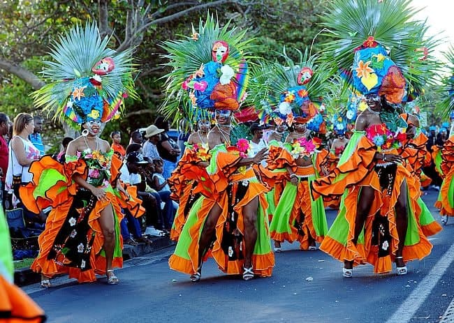
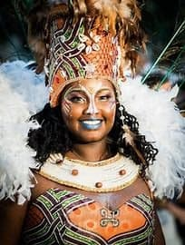

Bienvenue en Guadeloupe
La Guadeloupe fait partie des Petites Antilles ou "îles du Vent".
Ce département français possède de belles plages de sable blanc et des eaux turquoises,
et il y a beaucoup de plages à découvrir sur l’île. La plupart du temps, elles sont
calmes, sauf les plus réputées, car l’île n’est pas encore consommée par le tourisme
international. Il existe des dizaines de petites plages disséminées le long de l’île.
[La culture]

La Guadeloupe abrite plusieurs anciennes plantations d’esclaves préservées
(certaines ont même été converties en hôtels) et des musées qui vous plongent
dans l’histoire de l’île. Reconnus pour la culture de la canne à sucre et du café,
les habitants sont très fiers de leur culture et du travail acharné qui résulte des
dangers auxquels ils ont été confrontés il y a des siècles. Une promenade dans
n’importe quel marché de l’île vous mènera au milieu de stands de produits locaux,
tandis qu’une promenade autour de Sainte-Anne mettra en évidence les champs de canne
à sucre (maintenant utilisés pour le rhum).

[Découverte de la commune de Bouillante]
Fondée au XVIIe siècle, cette commune de la côte ouest de
Basse-Terre doit son nom à ses nombreuses sources chaudes alimentant aujourd’hui
une centrale géothermique. Si beaucoup de voyageurs s’y rendent pour la plage de
Malendure et ses cocotiers, la commune de Bouillante est incontournable tout simplement
parce que la Réserve Naturelle de Jacques Cousteau s’y trouve. En famille ou entre amis,
visitez la réserve en kayak, faites du snorkeling, promenez-vous en bateau à fond de
verre ou adonnez-vous à des activités comme la plongée sous-marine. Vous ne le
regretterez pas.